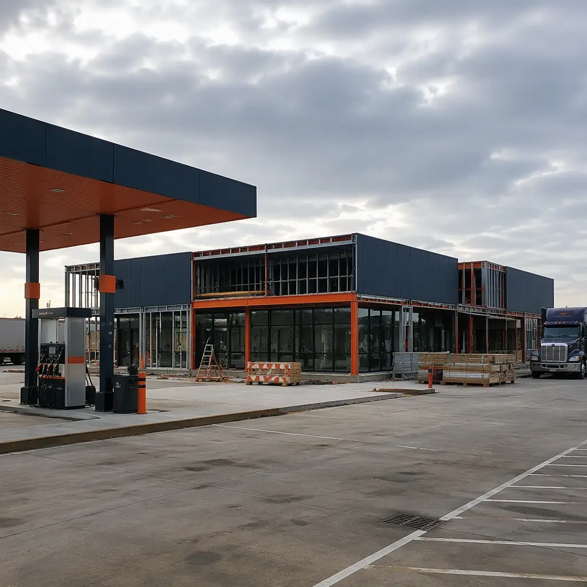
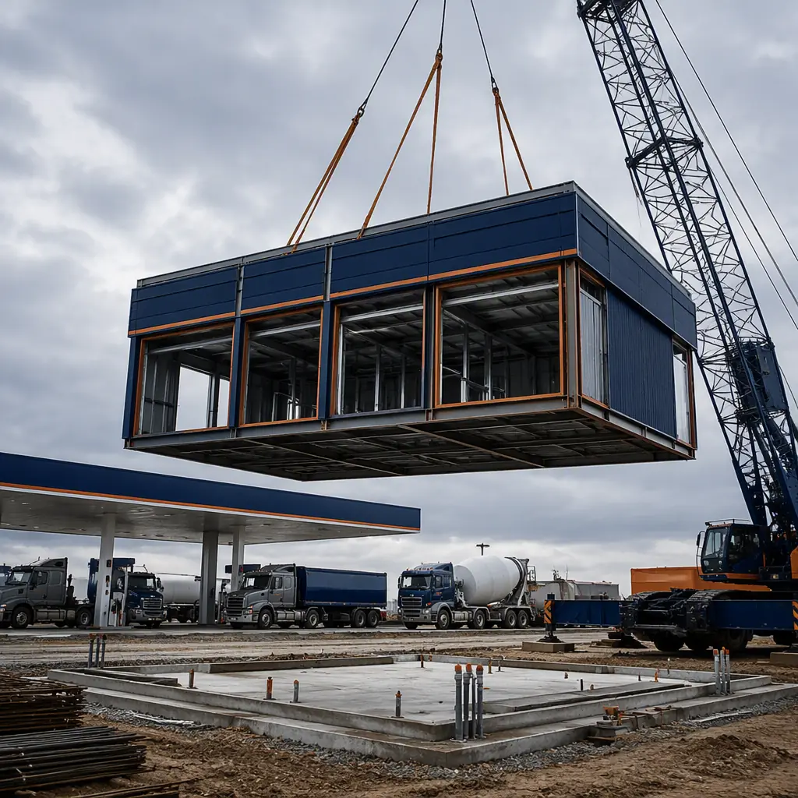
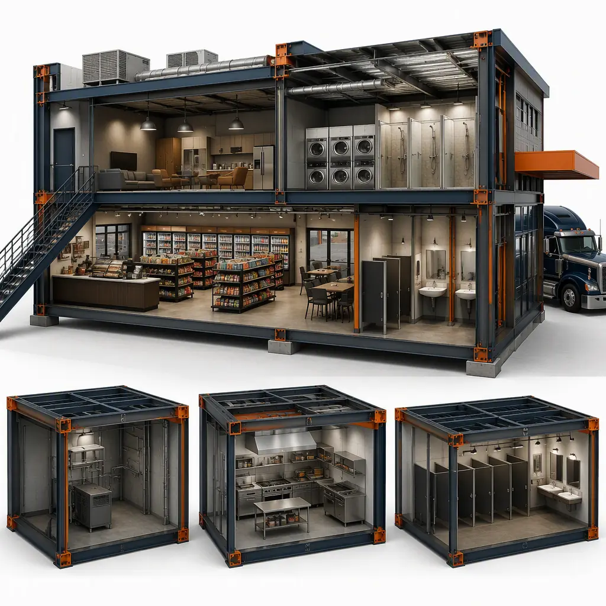
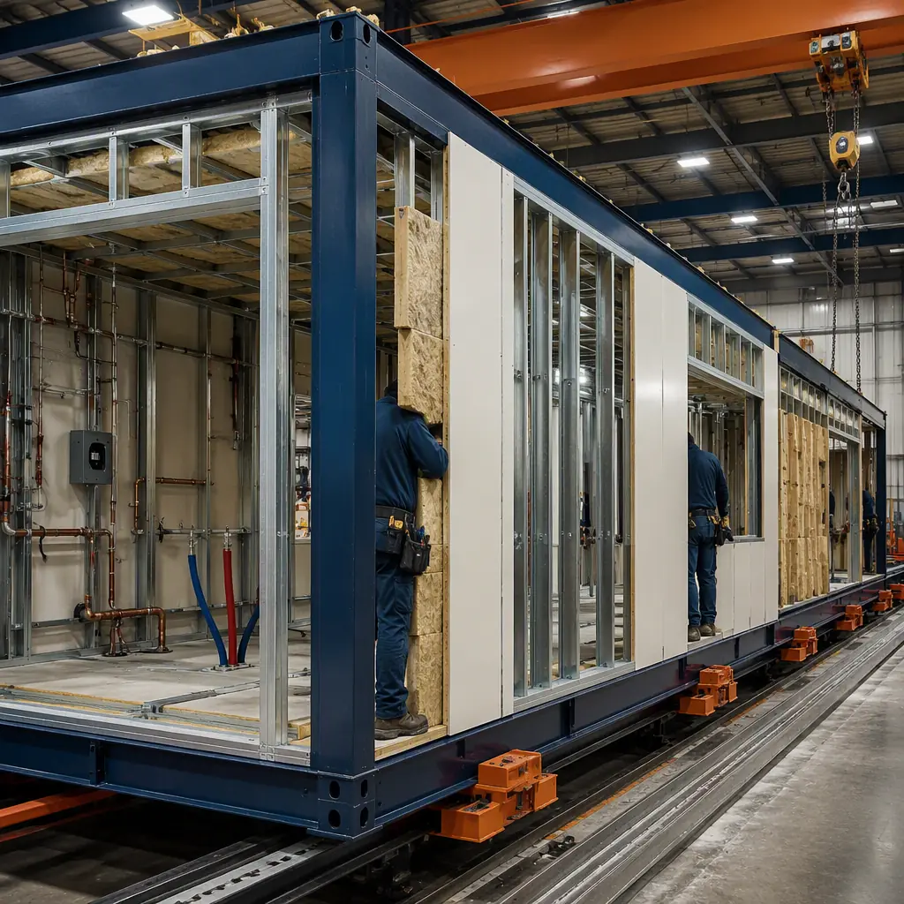

The American truck stop is a demanding building program hiding in plain sight. The 3.6 million truck drivers in the US need roughly 313,000 parking spaces today, and the federal Jason's Law survey has documented a shortage of over 40,000 spaces for years — a gap that has pushed truck stop developers to build faster and denser. Yet the typical truck stop or travel plaza is still delivered conventionally over 10–14 months: a 5,000–8,000 sq ft convenience store, a 2,000–4,000 sq ft driver facility with showers, laundry and a lounge, fuel canopy and dispensing infrastructure, and a maintenance or scale building. Modular prefabricated construction manufactures these buildings as factory-built steel-frame modules in parallel with site work, fuel system installation, and permitting — compressing the total program to 6–8 months with a 15–25% building cost reduction. The same concurrent-production model that accelerates modular gas station and EV charging hub construction applies at travel plaza scale.

Why Truck Stop Development Is a Schedule-Critical Program
Truck stops pair a razor-thin revenue model with a complex site program — fuel margins, parking revenue, and food service margins all depend on opening before the competing plaza a mile down the interstate. Several structural factors make conventional delivery slow:
- Fuel infrastructure drives the critical path. Underground storage tank (UST) installation, fuel system permitting, and environmental compliance routinely take 4–6 months and must be sequenced with building construction. Modular delivery manufactures the store and driver facilities during this window, so the buildings arrive ready to set when the fuel system is approved — the same parallel-schedule logic documented in our modular hydrogen refueling station guide.
- Driver facilities are MEP-dense. A modern driver facility packs showers, laundry, a lounge, kitchen prep for food service, and restrooms into a compact footprint — plumbing and HVAC intensity closer to a hotel than a warehouse. Factory-built modules arrive with all wet systems installed, pressure-tested, and ready for connection, compressing the field fit-out that conventionally adds 3–4 months. The wet-room density parallels what we document for modular bathroom pod construction.
- Site work is weather- and labor-exposed. Highway sites, especially rural interstate interchanges, struggle with skilled labor availability and seasonal weather windows. Factory-built modules travel as standard flatbed cargo — the logistics chain detailed in our modular transportation and logistics guide — and arrive complete, minimizing the on-site trades exposure that drives rural construction costs up.
- Phased openings maximize revenue. Operators increasingly open fuel and convenience sales first, then add driver facilities and food service as demand builds. Modular delivery supports this natively — a core module set deploys for opening day, and kitchen, laundry, or expansion modules arrive later without shutting the plaza down. This phasing logic mirrors the expansion approach in modular building additions and expansions.


What Gets Factory-Built — The Truck Stop Module Package
The modular truck stop divides into functional modules that can be manufactured, tested, and shipped independently, then combined on site into a complete plaza:
Convenience Store and Fuel Sales Modules
The store module — typically 3,000–5,000 sq ft — houses the retail sales floor, checkout counter, food service prep area, and back-of-house storage and office space. Factory-built modules arrive with casework, cold storage, point-of-sale wiring, and the fire suppression and ventilation systems required for food service pre-installed. A conventional store build takes 6–9 months on site; factory production compresses that to 2–3 months, with the module arriving finished and ready for connection to fuel system and utilities. Store and retail building programs follow the pattern we document for modular retail construction.
Driver Facility Modules
Driver lounges, shower and laundry banks, and restrooms are delivered as dedicated wet modules — factory-installed plumbing, tile, fixtures, and high-efficiency HVAC that keeps shower and laundry areas ventilated and mold-free. A 10–16-shower driver facility that conventionally takes 4–5 months of field work arrives as finished modules set in days. The mechanical density is the same category of work we cover in modular restaurant construction, where kitchen grease and water loads drive factory coordination.
Food Service and Quick-Service Restaurant Modules
Quick-service restaurants (QSRs) and food halls inside truck stops are delivered as separate kitchen and dining modules — with hood systems, grease traps, and fire suppression factory-installed and tested before shipment. This keeps the food-service critical path off the site entirely: the QSR module is commissioned at the factory, shipped complete, and connected to utilities over a weekend. The same approach serves standalone QSR sites, covered in our modular restaurant and QSR guide.
Maintenance, Scale, and Support Buildings
Truck maintenance bays, scale houses, and equipment storage buildings complete the package. Maintenance modules arrive with vehicle lifts, compressed air systems, and wash bay drainage pre-installed; scale house modules follow the same factory-built pattern we detail for modular weigh stations and scale houses. These support buildings can be deployed in the same crane schedule as the main plaza, eliminating the second mobilization that conventionally follows the main build.

EV Charging & Alternative Fuel Integration
Electrification is rewriting the truck stop program. The EPA's heavy-duty vehicle regulations and the National Zero-Emission Freight Corridor Strategy are pushing charging infrastructure onto interstate corridors, and truck stop operators are installing DC fast chargers at 200–350 kW per stall — with megawatt-scale charging hubs planned for the late 2020s. Modular buildings support this transition structurally:
- Electrical rooms sized for growth. Factory-built electrical and switchgear modules can host transformer, switchboard, and charger feeder infrastructure, sized for today's 350 kW stalls with space reserved for megawatt charging. The power-dense building program parallels modular EV battery gigafactory construction.
- Canopy and charging integration. Solar-ready canopy structures and charging equipment pads are coordinated at module design stage, so the store and driver modules arrive with the conduit, metering, and mounting infrastructure pre-installed.
- Alternative fuels. Compressed natural gas (CNG), hydrogen, and renewable diesel dispensing are increasingly part of the plaza program. The hydrogen station module set we document in modular hydrogen refueling stations integrates directly with a modular plaza package.
Highway Rest Areas & Welcome Centers
State DOTs and turnpike authorities face a different version of the same program: rest areas and welcome centers must remain open to the public while being rebuilt, and funding cycles rarely align with construction schedules. Modular delivery solves both problems — restroom and visitor modules are factory-built while the existing facility keeps operating, then swapped in during a short closure window. A restroom building that conventionally takes 8–12 months of phased construction can be replaced in a single construction season, with the modules arriving fully finished and ADA-compliant. Government procurement for these facilities follows the same path we document for modular government and municipal buildings, and the phased replacement approach is the same one used in modular hospital expansion on active facilities.
Compliance — NATSO, Fire Codes, and Environmental Rules
Truck stop development operates under a dense compliance stack: NATSO and state truck stop association design guidance, IBC occupancy and fire separation requirements for mixed retail/food/driver-facility occupancies, UST and SPCC environmental rules for fuel systems, and Americans with Disabilities Act (ADA) requirements for driver facilities and restrooms. Modular delivery supports compliance by enabling factory-documented fabrication — fire-rated assemblies, accessibility layouts, and MEP systems are built and inspected to code at the factory, with the documentation package delivered for the AHJ's field inspection. Permitting strategy for commercial projects is covered in our guide to permitting and zoning.
Cost Structure — Modular vs. Conventional Truck Stop Build
| Cost Category | Conventional (12,000 sq ft Plaza) | Modular (12,000 sq ft Plaza) |
|---|---|---|
| Convenience store & fuel sales building | $1.8–2.8M | $1.5–2.2M (factory-built) |
| Driver facility (showers, laundry, lounge) | $0.9–1.5M | $0.7–1.2M (wet modules) |
| QSR / food service module | $0.8–1.4M | $0.6–1.1M (factory-commissioned) |
| Maintenance, scale & support buildings | $0.6–1.0M | $0.45–0.8M |
| Field labor, logistics & weather risk | $0.8–1.3M | $0.3–0.55M |
| Total Building Cost | $4.9–8.0M | $3.55–5.85M |
The 15–25% building cost reduction compounds with 2–4 months of earlier fuel and store revenue — material for a plaza where every month of delay transfers customers to the competing interchange. For a full treatment of modular project economics, see our 2026 modular cost guide and our developer's ROI analysis.
Multi-Site Rollout for Truck Stop Networks
Regional operators and fuel retailers rarely build a single plaza — they roll out networks of five, twenty, or a hundred locations along corridors. Network rollout is where modular delivery compounds its advantage: the first location establishes the module designs, documentation package, and commissioning procedures, and every subsequent location reuses them, cutting design time per site by 50–70% and standardizing spare parts, signage, and training across the fleet. Operators can also phase capacity — deploying a minimal store-and-fuel set now and adding driver facilities or QSR modules as traffic builds — matching capital deployment to actual utilization. This standardization benefit is the same one we document for modular ROI analysis of multi-site programs, and the financing options in our modular construction lending guide apply directly to network-scale rollouts.
Sustainability & Energy Systems for Highway Commercial Sites
Travel plazas run around the clock, making them among the most energy-intensive building types in commercial construction — a 12,000 sq ft plaza with 24/7 lighting, refrigeration, and driver facility hot water can draw 300–500 kW at peak. Modular delivery attacks this load profile at the factory: high-R insulated wall and roof panels, LED lighting with daylight controls, high-efficiency HVAC, and heat-pump water heaters for the shower and laundry banks are standard module options, and solar-ready roof structure can be integrated at design stage. The energy-performance discipline parallels what we document for modular net-zero energy buildings, and the electrical design that supports EV charging — sized transformer and switchgear capacity, metering, and load management — follows the power-dense building program we cover in modular EV battery gigafactory construction. For operators, the combination of lower energy bills and utility incentive programs for EV infrastructure can offset a meaningful share of the building premium, which is why we detail the full cost picture in our modular cost guide.
Is Modular Right for Your Truck Stop Project?
Modular truck stop delivery delivers the strongest value for corridor network rollouts where production-line repeatability cuts design cost per site, phased openings where operators need fuel and store revenue before driver facilities are complete, sites with constrained labor or short construction seasons, and rest area replacement programs where the existing facility must keep operating during construction. For flagship plazas with extensive food service programs and custom architecture, a hybrid approach — modular store and driver facilities with conventional food-service fit-out — delivers most of the schedule and quality benefits while preserving design flexibility for the brand experience. For developers building highway commercial infrastructure, modular delivery converts the building program from the project's longest schedule risk into a parallel production stream — consistent with the modular fuel station and modular retail programs we document elsewhere.